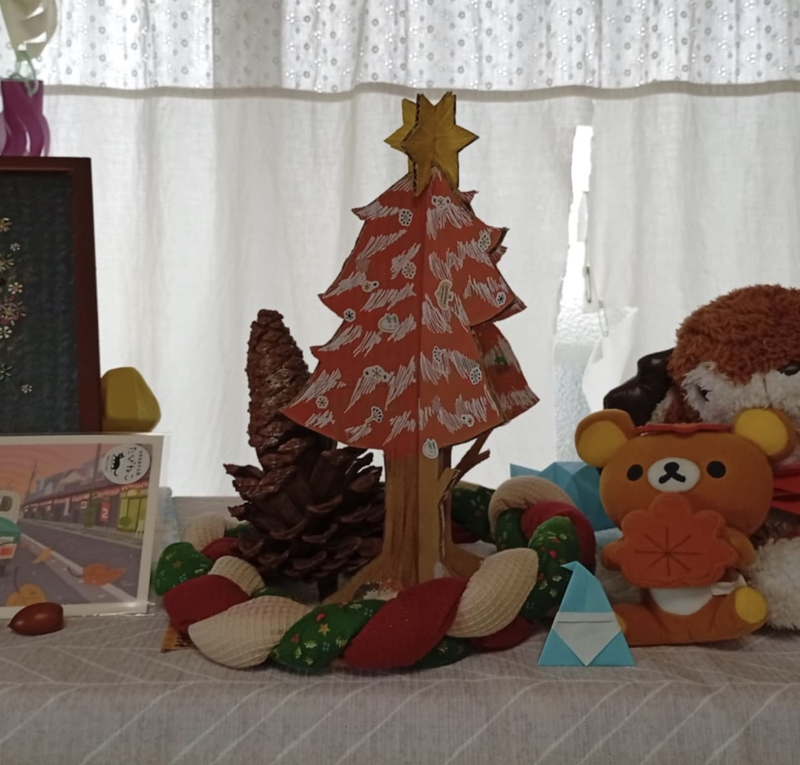
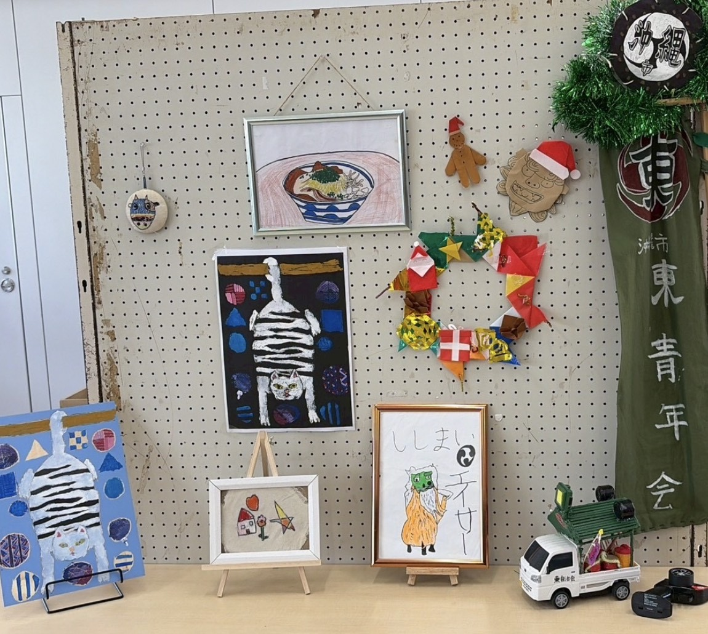
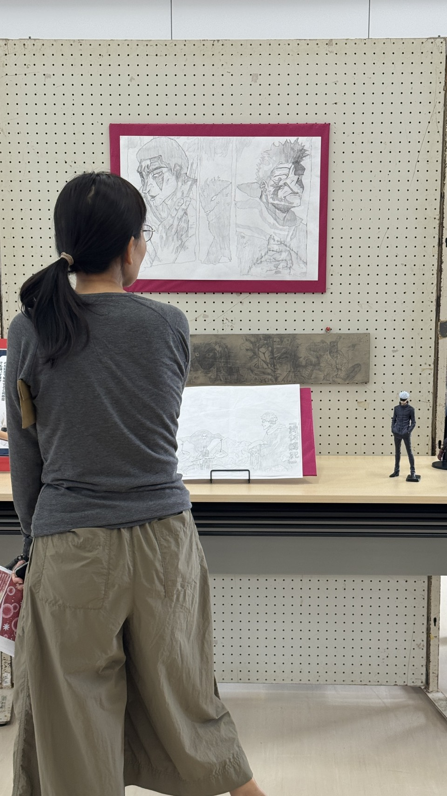

総合案内
入口を選ぶと、ここに案内が表示されます
自由入力はありません。個人情報や詳しい事情を尋ねず、今ある参加方法だけをご案内します。
開催企画中｜沖縄文芸フリマ vol.3｜2026年度プロジェクト
作品や「好き・得意」から、地域とゆるやかにつながる入口を探せます。
見るだけ、作品だけ、短い時間だけでも参加です。次の段階へ進むことをゴールにはしません。
2027年2月、田場公民館での開催を企画しています。正式な日程・募集内容は、決まり次第お知らせします。
沖縄文芸フリマ案内所
入口を選ぶと、担当スタッフが固定の案内文でご案内します。
まどか総合案内
えんぴつ子ども・作品
なぎ学校・保護者
そら若者・伴走
ゆい地域連携
みなもいきもの・文化
下の入口から、今の立場に近いものを選んでください。
ずんだもん音声案内
音声をオンにすると、入口を選ぶたびに固定の案内文を読み上げます。音声ファイルはこのサイト内から再生し、文章や個人情報を外部へ送りません。
音声は自動再生されません。
音声：VOICEVOX:ずんだもん
立場別の入口
名前や相談内容は入力しません。近い入口を一つ選ぶだけです。
総合案内
自由入力はありません。個人情報や詳しい事情を尋ねず、今ある参加方法だけをご案内します。
参加のしかたはいろいろ
見るだけ、作品だけ、少し手伝う。どれか一つを選んでも、選ばなくても大丈夫です。
会場をのぞいてみる
作品棚
作品だけの参加もできます。作者名や学校名は、公開範囲を本人・保護者と確認してから掲載します。
昨年の会場から



今年やってみたいこと
当日に「助かった」「うれしかった」と感じた小さな出来事を、名前を書かずに付せんで残す企画を考えています。
誰かを評価するためではなく、会場でどんな助け合いが生まれたかを振り返るための試みです。
今年やってみたいこと
田場で見つけたいきもの、昔の写真、暮らしの知恵などを集め、マップやZINEにする構想です。まずは会場で話を聞くところから始めます。
個別の事情や正式な相談は、このページに入力せず、人間の担当者へ直接ご連絡ください。
電話：070-5692-4173（公式サイト掲載番号）